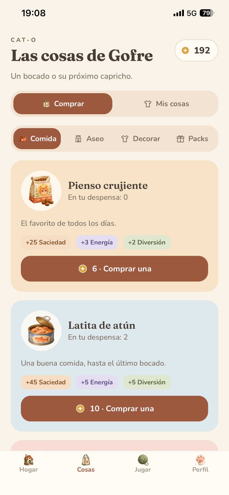
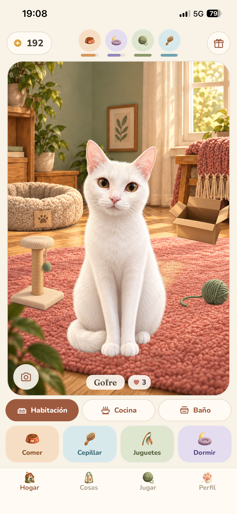
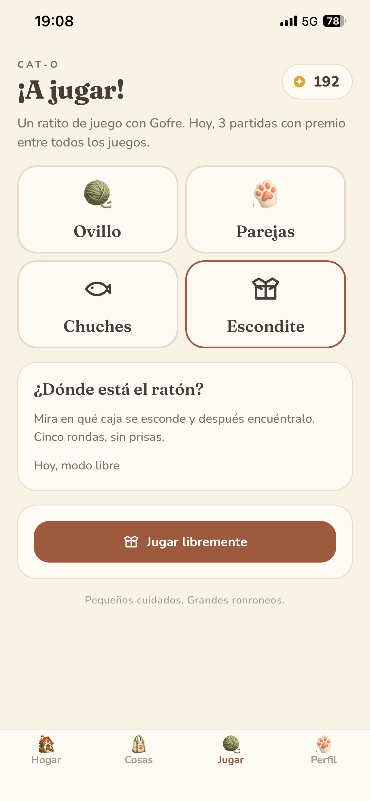

El juego completo se puede jugar gratis
Descarté anuncios, venta de monedas y recompensas aleatorias de pago. La compra opcional es un pack cosmético permanente; compras y acciones externas quedan tras un control para padres.
Mi gato Gofre, convertido en una mascota virtual que puedes cuidar y personalizar.



El jugador adopta un gato, elige su nombre y pelaje, atiende sus necesidades y decora su casa. El gato también actúa por su cuenta: se lava, busca el sol o se mete en una caja. Habitación, cocina y baño dan un lugar reconocible a cada cuidado.
Cuatro minijuegos permiten ganar monedas para comida, decoración, ropa y accesorios. El vínculo crece con los cuidados y nunca baja por ausentarse.
Mi aportación: dirigí el producto, definí requisitos y decisiones de diseño y realicé sesiones de QA en iPhone. El desarrollo se hizo con asistencia de Codex y Claude y el arte visual se generó con Codex/ChatGPT.
Descarté anuncios, venta de monedas y recompensas aleatorias de pago. La compra opcional es un pack cosmético permanente; compras y acciones externas quedan tras un control para padres.
Adopción y ayuda inicial dan paso a cuidados, juegos y personalización. La navegación separa Hogar, Cosas, Jugar y Perfil; los ajustes de adultos tienen su propia zona.
Durante las pruebas detecté que la caña dejaba de capturar después del primer intento. Documenté el fallo e iteré con los asistentes sobre el controlador del gesto. La corrección entró en la build 8; su disponibilidad en TestFlight no equivale a dar por superadas todas las pruebas nativas.
La 1.0 enviada lleva la build 8. Una mejora posterior explica cuándo el gato no quiere jugar con la caña y queda para la siguiente actualización. Mantengo separados el registro de QA, el código y la compilación que revisa Apple.
Capturas del iPhone durante las pruebas. Muestran el producto; no son maquetas.
Estas tecnologías describen la app desarrollada con asistencia de IA.
React Native 0.86, Expo SDK 57, React 19 y TypeScript. Expo Router, Zustand y AsyncStorage, con Zod para validar partidas y migraciones. Español e inglés con i18next.
Animación con Reanimated, gestos y composición por capas de escenarios, gato, pelajes, ropa y accesorios.
StoreKit 2 mediante expo-iap para compra, restauración y estados pendientes. Audio, respuesta háptica, recordatorios locales y capturas compartibles.
Pruebas automatizadas de lógica y traducciones, TypeScript y ESLint; builds iOS con EAS y distribución por TestFlight. Ficha bilingüe, capturas y páginas públicas de soporte y privacidad.
Versión 1.0, build 8, y pack «Invierno acogedor» pendientes de revisión de Apple. Probada y distribuida por TestFlight. La publicación será manual tras la aprobación; todavía no hay disponibilidad pública en App Store acreditada.
El registro de QA conserva comprobaciones pendientes en dispositivo, incluido el precio real del pack. La corrección posterior QA-52 queda para una siguiente actualización.
Soporte público ↗ · Repositorio de soporte y privacidad ↗
El código del juego es privado. El repositorio público contiene solo páginas de soporte y privacidad.